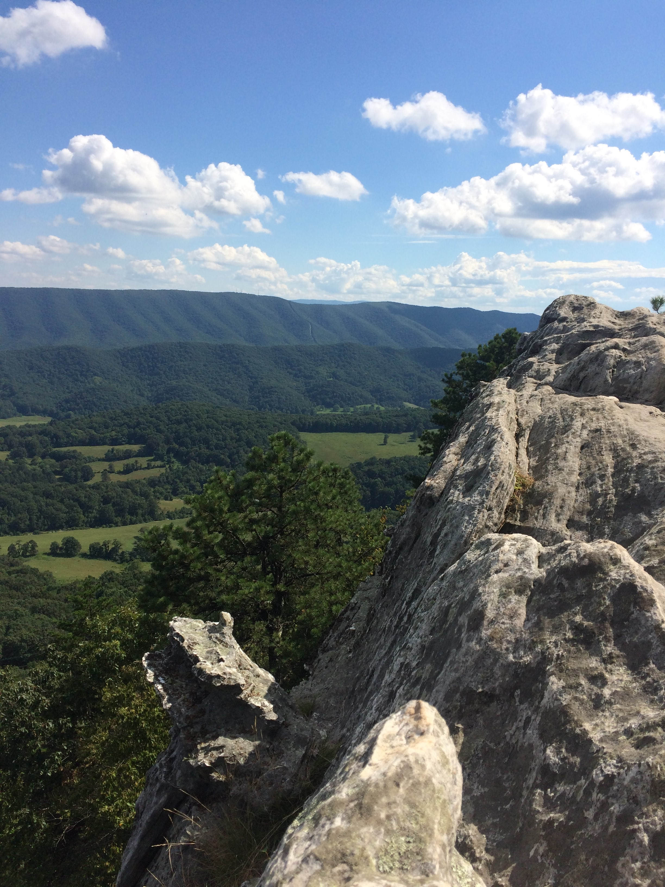
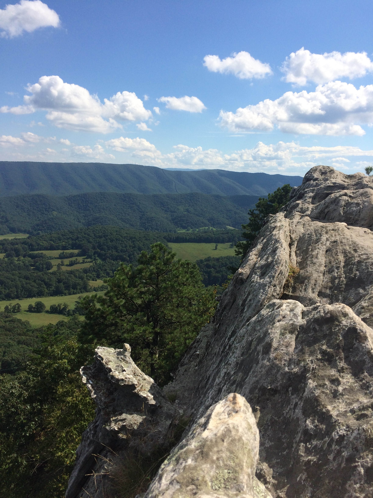

Welcome to the Top!
What to Expect
Located in Catawba Virginia, Dragon’s Tooth is a MODERATE DIFFICULTY level hike. The total distance of the hike is about 4 miles round trip, 2 miles up and 2 miles down. The first leg of the hike consists mostly of a flat trail, however, it consists of inclines so prepare for a booty workout and your knees to hurt the next day. The second leg of the trail is where it gets difficult. To reach the top you have to rock climb up the side of the mountain which is very dangerous but doable for all ages as long as you're careful. The view at the top is worth it but to see it you have to climb even more to the top of a narrow rock. The rock head is also narrow and if you fall there is nothing to catch you. Use caution on this trail if you're a new hiker. Hike smart!
 
